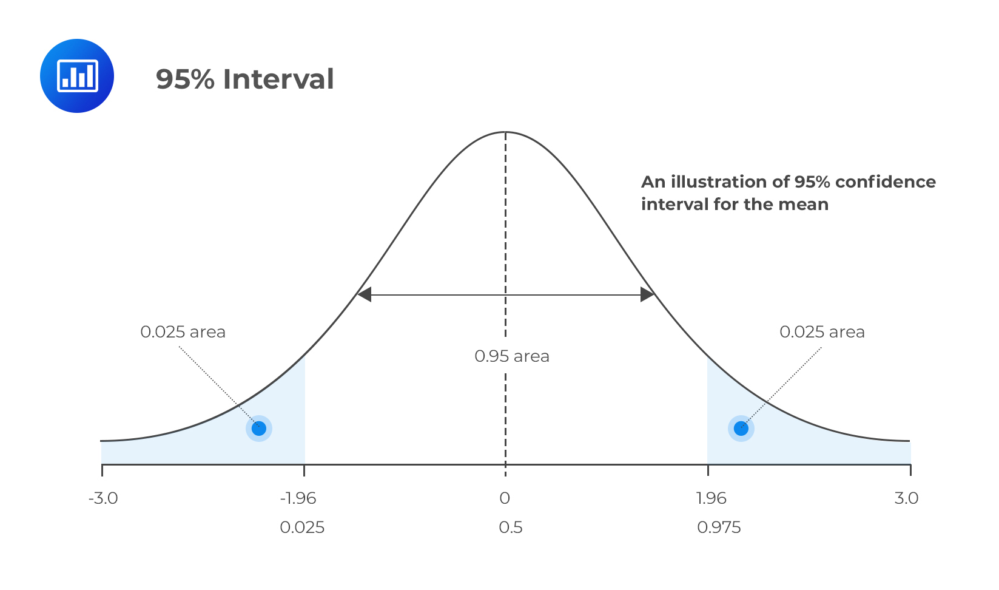

When constructing a confidence interval for a proportion, you must check the conditions for inference
These are the same conditions as earlier:
The sample must be randomly selected
The population must be more than 10 times the sample size (\(N \ge 10n)\)
If this condition is violated, the calculated standard deviation will be higher than what it really is, creating confidence intervals that are wider than what they need to be
The Large Counts Condition must be met:
\(n\hat{p} \ge 10\)
\(n(1 - \hat{p}) \ge 10\)
This is essentially saying that the number of successes and the number of failures must be greater than or equal to 10
If these are met, your calculations are essentially statistically valid
The point estimate of the population proportion \(p\) is simply the sample proportion, \(\hat{p}\)
The standard deviation will be \(\sqrt{\frac{p(1 - p)}{n}}\)
However, since this will be unknown when making a confidence interval, we need to use a different value
We use the standard error of the statistic, which is \(SE_\hat{p} = \sqrt{\frac{\hat{p} (1 - \hat{p})}{n}}\)
Same thing as standard deviation, just use \(\hat{p}\) instead of \(p\)
We call it standard error when the value comes from the statistic
To find the critical value, you can use a normal curve
When you visualize a confidence interval, the parts that are not filled in, the tails, will be outside of the area designated by the confidence level
Therefore, when the confidence level is 95%, one of the tails will have an area of 2.5%, as both tails and the body combined make 100%

Since the confidence interval will encompass all values within \(z\) standard deviations of the mean, you can simply find the value of \(z^*\) that allows you to be that many standard deviations away
Since the empirical rule states that about 95% of the data on a normal curve are within about 2 standard deviations from the mean, your critical value would be 2.
To find it with a calculator, you can use the function invNorm(\(\mathbf{a}\), 0, 1), where \(a\) is the area under one tail
Since \(a\) represents the area under one tail, it is equal to \(\frac{1 - c}{2}\), where \(c\) is the confidence level, given as a number between 0 and 1
This will return the negative version of your critical value; since you are doing a plus or minus operation, it doesn't really matter if you use the negative or positive
0 is \(\mu\): the mean of the standard normal distribution
1 is its standard deviation
Therefore, the confidence interval to estimate a population proportion can be written as: $$ \text{interval} = \hat{p} \pm z^* \cdot \sqrt{\frac{\hat{p}(1 - \hat{p})}{n}} $$
\(n\) represents the sample size, \(\hat{p}\) represents the sample proportion, and \(z^*\) represents the critical value